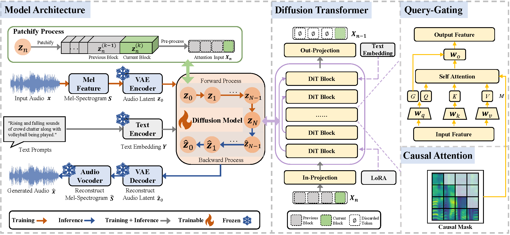

VaALG: A Fine-Grained Benchmark and an Autoregressive Diffusion Model for Variable-Length Audio Generation
ACM MM 2026 Submission 4619
Abstract
Despite breakthroughs in fixed-length audio generation, studies on variable-length audio generation remain underexplored, primarily due to two fundamental impediments. First, existing audio captioning datasets typically pair fixed-length audio with context-invariant captions, failing to capture the semantic dynamics of long-form audio sequences. Second, contemporary audio diffusion models are constrained by fixed-resolution audio latent representations, which limits generation to a pre-defined duration. In this work, we endeavor to fill in these research gaps to some extent. First, we establish a fine-grained benchmark dataset for VAriable-Length Audio Generation, namely VaLAG-Bench. It consists of 6,722 audio samples of 25.9 to 60.4 seconds duration, coupled with 143,343 captions annotated by human contributors and Large Audio-Language Models. Moreover, it comprises manually verified sound event timestamps to accurately describe semantic variations in long-form audio. Second, a novel autoregressive diffusion method for variable-length generation, VaLAG-Model is proposed. It advocates a next-block prediction approach to achieve fine-grained semantic control of output samples. Furthermore, additional Query-Gating mechanisms and Low-Rank Adaptation techniques are incorporated to enable variable-length generation capabilities without compromising fixedlength generation performance. Experimental results on two audio generation benchmarks, AudioCaps and Clotho, in conjunction with our VaLAG-Bench, demonstrate that our VaLAG-Model significantly outperforms its counterparts in variable-length generation, while achieving comparable performance to state-of-the-art approaches in fixed-length generation. To facilitate the efforts of the academic community, VaLAG-Bench and VaLAG-Model are publicly available.
Contribution
We introduce VaLAG-Bench, the first fine-grained benchmark
for the variable-length audio generation task. It comprises
6,722 audio clips ranging from 25.9 to 60.4 seconds, accompanied
by manually verified timestamps of 100 distinct
sound event categories. Based on these audio samples and
annotations, 143,343 fine-grained captions were generated
by humans and Large Audio-Language Models, which provide
detailed descriptions of the semantic evolution within
long-form audio.
A novel autoregressive diffusion method, VaLAG-Model,
is proposed in this paper. VaLAG-Model partitions fixedshape
audio features into blocks and deploys a next-block
prediction strategy to generate audio of arbitrary lengths.
Moreover, it incorporates an innovative Query-Gating mechanism
and Low-Rank Adaptation techniques, achieving
variable-length generation capabilities without compromising
its performance on fixed-length generation.
Extensive experiments conducted on two widely used audio
generation benchmarks, AudioCaps and Clotho,
in conjunction with our VaLAG-Bench, demonstrate that
VaLAG-Model significantly outperforms its competitors in
terms of variable-length audio generation, while achieving
competitive performance comparable to SOTA approaches
in fixed-length audio generation.
VaLAG-Bench: A Fine-Grained Benchmark for Semantic Variations in Long-Form Audio
To facilitate the study of variable-length audio generation, we establish a new benchmark dataset, namely VaLAG-Bench. This dataset is composed of 6,722 audio samples, with a duration ranging from 25.9 to 60.4 seconds. These samples have been manually verified, with fine-grained timestamps indicating the start and end times of 100 sound event categories. Furthermore, VaLAG-Bench comprises 143,343 textual captions, which are generated by human volunteers and the Large Audio-Language Model (LALM), providing detailed descriptions of semantic changes occurring within long-form audio.
|
VaLAG-Model: An Autoregressive Diffusion Method for Variable-Length Audio Generation
As demonstrated in Fig. 1, our proposed VaLAG-Model is founded on a latent diffusion architecture comprising an audio variation autoencoder (VAE) for compressing and decompressing audio features, a text encoder for processing text descriptions, a variant of Diffusion Transformer (DiT) for performing the denoising process, and an audio vocoder for restoring denoised audio features to waveforms. In order to furnish the model with the capacity to generate audio of variable length, audio features are segmented into blocks, whilst an autoregressive block-based prediction strategy is adopted. In detail, previously denoised audio blocks are utilized as supplementary conditions to guide the denoising process of the current block, ensuring coherence between audio contexts. Furthermore, additional Query-Gating mechanisms and Low-Rank Adaptation techniques are incorporated, allowing the model to acquire variable-length generation capabilities without compromising its fixed-length generation performance.

Comparative Samples: Fixed-Length Audio Generation
| Text Description / Dataset Metadata | AudioLDM 2 | Tango 2 | Stable Audio Open | GenAU | VaLAG-Model (Ours) |
|---|---|---|---|---|---|
| A click is followed by a woman speaking and then a sewing machine stitching. | |||||
| Insects buzzing as wind blows into a microphone and birds chirp in the background. | |||||
| Violins and accordion being played somewhat off key. | |||||
| A warning signal going off, then a train goes past, then just the signal again. | |||||
| Rain is pouring hard on the patio roof outside. |
Comparative Samples: Variable-Length Audio Generation
| Text Description / Dataset Metadata | Ground Truth | AudioLDM | TangoFlux | Stable Audio Open | VaLAG-Model (Ours) |
|---|---|---|---|---|---|
| ["A child is singing.", "A child is singing.", "A child is speaking and singing.", "A child is singing and someone is laughing.", "A child is singing and someone is laughing.", "A child is singing."] | |||||
| ["The ship was sailing on the sea, creating sea waves and the wind was blowing loudly.", "The ship was sailing on the sea, creating sea waves and the wind was blowing loudly.", "The ship was sailing on the sea, creating sea waves and the wind was blowing loudly.", "The ship was sailing on the sea, creating sea waves and the wind was blowing loudly.", "The ship was sailing on the sea, creating sea waves and the wind was blowing loudly."] | |||||
| ["A man is giving a speech.", "A man is giving a speech.", "A man is giving a speech.", "A man is giving a speech.", "A man is giving a speech.", "A man is giving a speech."] | |||||
| ["A person is eating, with the sounds of chewing and swallowing.", "A person is eating, with the sounds of chewing and swallowing.", "A person is eating, with the sounds of chewing and swallowing.", "A person is eating, with the sounds of chewing and swallowing.", "A person is eating, with the sounds of chewing and swallowing.", "A person is slurping."] |